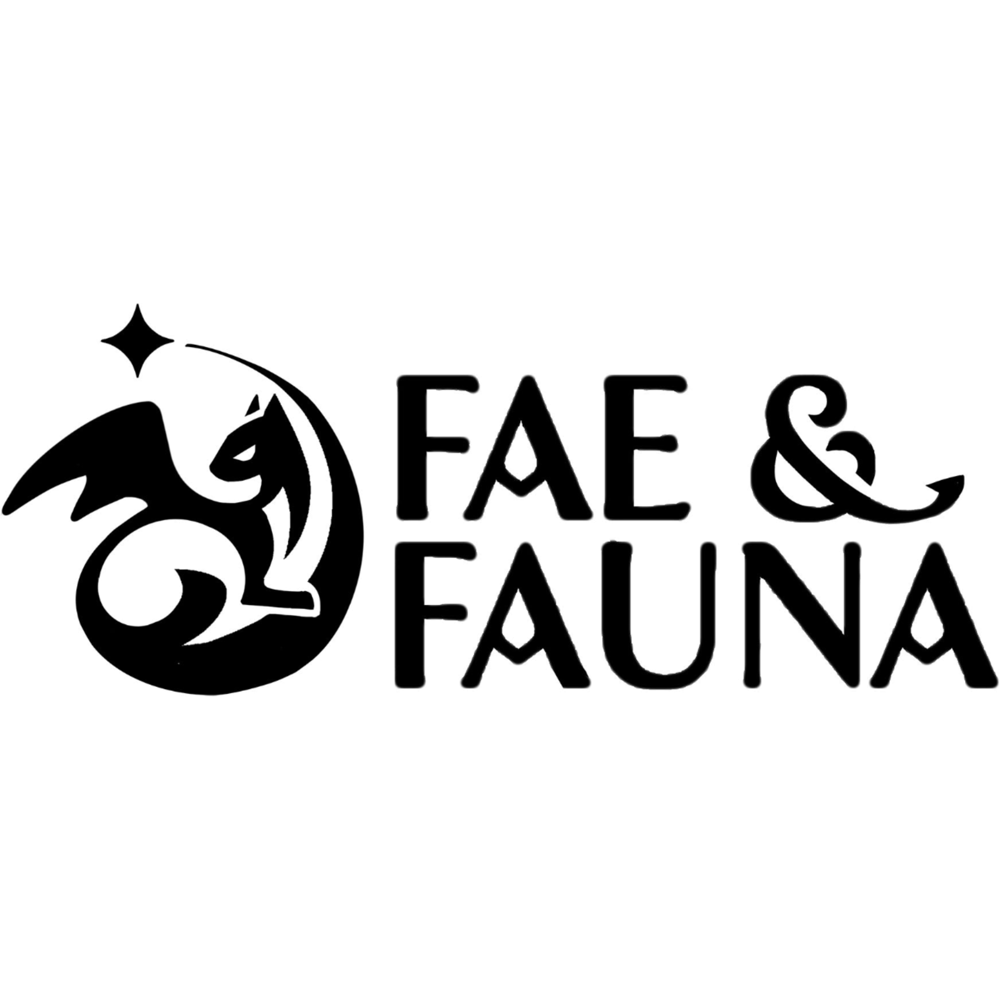

Project Overview
Summary
Fae & Fauna was the first commercial project I got to work on. As a game designer at Aurora Arts I had ownership of most of the gameplay- and systems-design. The goal was to make a game for a target audience of young women (14-25) who enjoy games such as Breath of the Wild, Genshin Impact, Palia & Infinity Nikki.
During the project I both designed, prototyped and finally implemented major systems using both Blueprints and C++. Some of the major systems were designed in collaboration with other team members, or had its code revised by the team's programmers. Collaboration was a large part of my day to day work at Aurora.
Towards the more recent stages of development I have also taken on more of a Game Director role to ensure all disciplines share a single vision.

Deepdives
We knew early that Fae & Fauna would need both a quest and a dialogue system. And with my programmers swamped with other work I was delegated the responsibility to set up these systems as I would be the one primarily using them for content implementation later on anyway.
Having content designed for a few game jams & hobby projects I knew that I would want solid tooling. So I looked into different ways to visualize the progression of dialogue primarily.
After looking at the Unreal Engine State Tree, Behavior Tree & Node Graph interfaces we internally decided that we preferred the node graph for quick iteration and glancing over the flow of the dialogue.
I started scouring the internet for resources on Unreal Engine but my google-fu was not great at finding major resources so I had to instead go and look into the source of the engine and experiment with what classes I needed to learn more about. After about a week of experimenting I ended up with a similar interface but with completely custom handling for the nodes.
I also spent a large amount of time to make sure that the nodes were very clear and modular, whether it was a simple statement, player responses, level-events or other functionality I spent some extra time making sure that the tools provide as much information as possible without cluttering up the view.
Quests & Dialogue are now two separate graphs both both for clarity and for source-control reasons. The quest graph has a lot fewer nodes but a lot more modular choices regarding objectives & level events, whereas the dialogue graph has more nodes to control camera angles, NPC expressions, player responses etc.
I would gladly go into more depth about this system if need be as there is a lot to cover on this page already. These systems alone taught me so much about both technical architecture & how to communicate between different parts of the development team that I feel like they have been pivotal for my career as a developer.
Fae & Fauna is a game partly about collecting magical pets & fighting cutesy enemies. So it felt like a no-brainer to spend a lot of time designing a robust system for the player to interact with. A lot of my focus went into designing and coordinating with one of the programmers on the team in order to quickly iterate and reach a level of robustness that we could build content with.
For pets we tried many iterations - Genshin style one-at-a-time and activate ability on switch, Pokémon "you control your pet", and "pets are just spells with big eyes" were all on the table at different points in discussion. But we wanted to set ourselves apart and let the player show off as much of their pet collection as possible without it being too much of a hassle to control so in the end we settled on the pets being AI-characters with their own behavior and quirks, but letting their big special move be controlled solely by player input. We found that using these abilities sometimes confused the player if the pet was out of sight (and thus out of mind), so after testing our solution ended up being that the player character should be the center of every ability. Either the pets infuse the player, or they teleport to them. This also created a way for the player to save pets from enemy AOE-effects by cleverly timing their pet abilities!
By reducing the need to focus on your pets' positioning in combat the combat scenarios quickly became more readable and we could afford adding more impact to each ability, whether hostile or friendly! It also removed some of the largest grievances with having AI-companions be the brunt damage output.
As for enemies I wanted to keep them clear, simple & unique. In early iterations we built most of the enemies with unique behavior trees. This approach was very time consuming both for me and the programmer responsible for AI-development so I wanted to try out a new approach, instead of tweaking the behavior tree we'd keep it simple and add "priority" to the enemy abilities instead. This meant putting more responsibility onto each ability, but multiple people could then work on a single enemy and the behavior tree, which was prone to breaking, could be kept intact while still making enemies that stand out mechanically.
When designing enemies I use a minimum-viability approach to keep down the production time. What is the problem I want the player to face when fighting this enemy? What is the minimum amount of features I need to introduce in order to clearly present that problem?
Working both on a lot of characters have taught me a about finding ways to cut iteration time as it accumulates quickly. It has also taught me that sometimes simple is more! And more can quickly become less if there is not a good way to clearly convey your intent to the player.
This section is especially Work-in-progress. I will get to it. Pinky promise. But please do talk to me about this topic! I think it's very interesting and I've worked very hard to get it to a point that I am proud of!